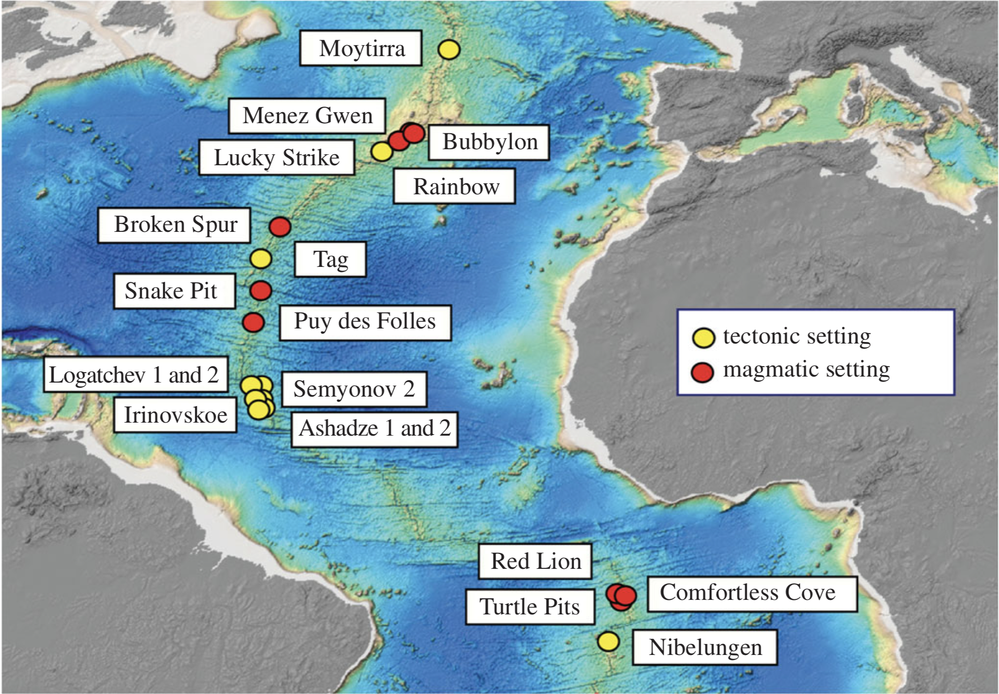
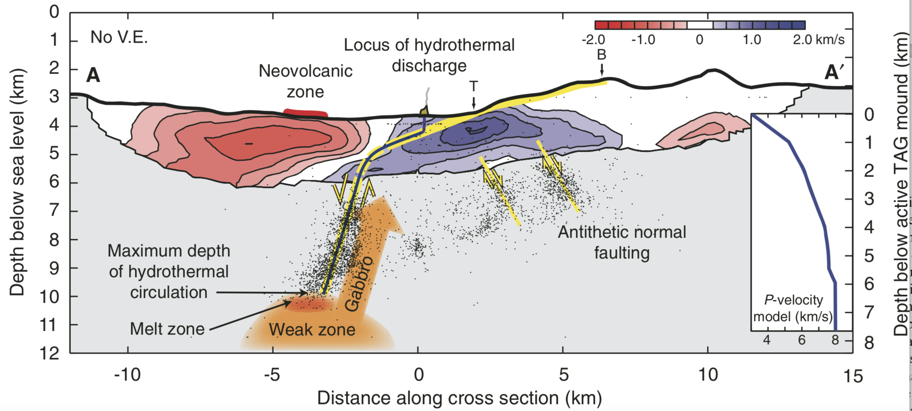
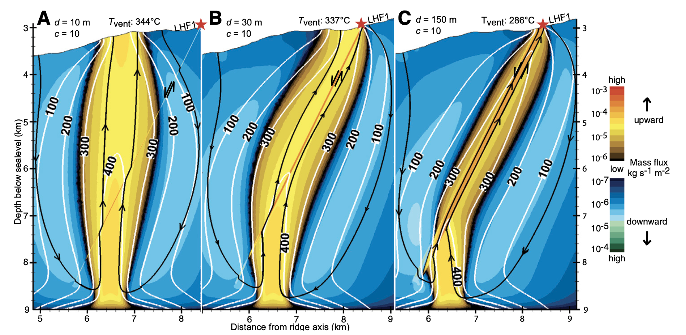

Structural controls on hydrothermal flow
Hydrothermal systems on slow-spreading ridges differe to their counterparts on fast-spreading ridges, in that they are often associated with tectonic faults (mar_vent_fig ).

Figure taken from [German et al., 2016] showing various vent fields on the Mid-Atlantic Ridge with their tectonic setting.
mar_vent_fig shows micro-seismicity and p-wave speeds for the TAG segment undergoing detachment faulting. One plausible scenario is that a magmatic intrusion at depth is driving hydrothermal flow and that upflow is channalized along a low-angle detachment fault. Venting occurs at the TAG mount, located on the hanging wall of the detachment.

Figure taken from [deMartin et al., 2007] illustrating a possible circulation pattern for the TAG hydrothermal field.
It remains a questions of ongoing research how exactly tectonic faults affect hydrothermal flow. It is, however likely, that the permeability of faults is different, most likely higher. One popular model is therefore that major tectonic faults, such as detachment faults, channelize hot hydrothermal upflow towards an off-axis vent site. This conceptual model was for example presented for the TAG [deMartin et al., 2007] and Logatchev [Andersen et al., 2015] vent fiels on the Mid-Atlantic Ridge (MAR).

Figure taken from [Andersen et al., 2015] showing a possible flow solution for the Logatchev vent field.
The above figure shows different flow solutions for different widths and permeabilities of a tectonic fault zone acting a s preferential pathways for hydrothermal upflow towards the Logatchev vent field. The key finding is that highly permeable pathways can channelize flow but that high permeabilities also imply intense entrainment of and mixing with colder fluids resulting a reduction of vent temperatures.
In the following exercises, we will explore how permeability affects flow and under with conditions tectonic fault zones can become preferential fluid pathways.